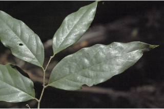
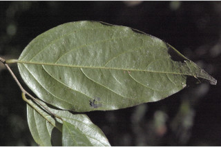
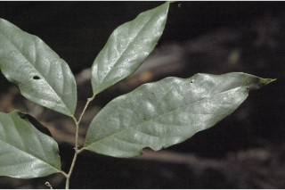
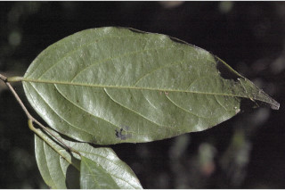

Large shrubs or small trees, up to 8 m tall.
8 ಮೀ ಎತ್ತರದವರೆಗೂ ಬೆಳೆಯುವ ದೊಡ್ಡ ಪೊದೆಗಳು ಅಥವಾ ಸಣ್ಣ ಮರಗಳು.
8 മീറ്റര് വരെ ഉയരം വരുന്ന വലിയ കുറ്റിച്ചെടിയോ ചെറുമരങ്ങളോ.
பெரிய குத்துச்செடி அல்லது சிறியமரம், 8 மீ. உயரம் வரை வளரக்கூடியது.
Bark grey, lenticellate, blaze cream.
ತೊಗಟೆ ಬೂದಿ ಬಣ್ಣ ಹಾಗೂ ಸೂಕ್ಷ್ಮ ಬೆಂಡು ರಂಧ್ರಸಹಿತವಾಗಿದ್ದು ಕೆನೆಯ ಬಣ್ಣ ಕಚ್ಚುಗಳನ್ನು ಹೊಂದಿರುತ್ತದೆ.
ശ്വസന രന്ധ്രങ്ങളുള്ള, ചാര നിറത്തിലുള്ള പുറം തൊലി, വെട്ട് പാടിന് ക്രീം നിറം.
மரத்தின் பட்டை சாம்பல் நிறம், லெண்டிசெல்லேட்லேட், உள்பட்டை கிரீம் நிறம்.
Branchlets whitish with impressed longitudinal reticulation, pubescent.
ಕಿರುಕೊಂಬೆಗಳು ಬೆಳ್ಳಗಿದ್ದು ಅಚ್ಚೊತ್ತಿದ ಉದ್ದುದ್ದವಾದ ಜಾಲಬಂಧ ವಿನ್ಯಾಸ ಹೊಂದಿದ್ದು ಮೃದುತುಪ್ಪಳ ಸಹಿತವಾಗಿರುತ್ತವೆ.
ഉപശാഖകള് വെളുത്ത നിറത്തില്, നീളത്തില് പതിഞ്ഞ ജാലികാവിന്യാസത്തോട് കൂടിയത്, രോമിലം.
வெள்ளை நிறமான சிறிய நுனிக்கிளைகள் மற்றும் நீள்வாக்கில் அமைந்த வலைப்பின்னல் போன்ற பதிந்த தழும்புகளுடையது, உரோமங்களற்றது.
Leaves simple, alternate, distichous; petiole 0.3-0.8 cm long, pubescent when young, subglabrous when mature; lamina 4.6-12 x 1.5-3.6 cm, lanceolate to narrow ovate, apex caudate - acuminate (acumen up to 2 cm), base acute, margin entire, glabrous above, obscurely pellucid punctate and pubescent on nerves beneath; secondary_nerves 5-9 pairs; tertiary_nerves filiform, close, parallel to subparallel.
ಎಲೆಗಳು ಸರಳವಾಗಿದ್ದು, ಪರ್ಯಾಯ ಜೋಡನಾ ವ್ಯವಸ್ಥೆಯಲ್ಲಿದ್ದು ಕಾಂಡದ ಎರಡೂ ಕಡೆ ಎದುರು ಬದರಿನ ಲಂಬಸಾಲಿನಲ್ಲಿರುತ್ತವೆ. ತೊಟ್ಟುಗಳು 0.3 ರಿಂದ 0.8 ಸೆಂ.ಮೀ. ಉದ್ದವಿದ್ದು, ಎಳೆಯದಾಗಿದ್ದಾಗ ಮೃದುತುಪ್ಪಳದಿಂದ ಕೂಡಿದ್ದು ಬಲಿತ ಎಲೆತೊಟ್ಟುಗಳು ಉಪರೋಮರಹಿತವಾಗಿರುತ್ತವೆ. ಎಲೆ ಪತ್ರ 10 - 4.6 - 12 × 1.5 - 3.6 ಸೆಂ.ಮೀ. ಗಾತ್ರವಿದ್ದು, ಪತ್ರಗಳು ಭರ್ಜಿಯಾಕಾರದಿಂದ, ಇಕ್ಕಟ್ಟಾದ ಅಂಡಾಕಾರದಲ್ಲಿದ್ದು ಬಾಲರೂಪಿ – ಕ್ರಮೇಣ ಚೂಪಾಗುವ (ಮೊನಚುಭಾಗ 2 ಸೆಂ.ಮೀ. ಉದ್ದವರೆವಿಗೆ) ತುದಿ, ಚೂಪಾದ ಬುಡಭಾಗವನ್ನು ಹೊಂದಿರುತ್ತದೆ; ಅಂಚು ನಯವಾಗಿರುತ್ತದೆ; ಪತ್ರಗಳ ಮೇಲಿನ ಭಾಗದಲ್ಲಿ ರೋಮರಹಿತವಾಗಿರುತ್ತವೆ. ತಳಭಾಗ ಅಗೋಚರವಾದ ಪ್ರಕಾರಭೇದ್ಯ ಮಚ್ಚೆಗಳಿಂದ ಕೂಡಿದ್ದು ನಾಳಗಳ ಮೇಲೆ ಮೃದುತುಪ್ಪಳವನ್ನು ಹೊಂದಿರುತ್ತವೆ; ಎರಡನೇ ದರ್ಜೆಯ ನಾಳಗಳು 5 ರಿಂದ 9 ಜೊಡಿಗಳಿದ್ದು ಮೂರನೇ ದರ್ಜೆಯ ನಾಳಗಳು ದಾರದಂತಿದ್ದು, ಹತ್ತಿರದ ಅಂತರಹೊಂದಿದ್ದು ಸಮಾಂತರದಿಂದ ಉಪಸಮಾಂತರವಾಗಿರುತ್ತವೆ.
ലഘുവായ ഇലകള്, ഏകാന്തരക്രമത്തില്, തണ്ടിന്റെ ഇരുഭാഗത്ത് മാത്രം അടുക്കിയിരിക്കുന്നു; ഇലഞെട്ടിന് 0.3 മുതല് 0.8 സെ.മി, നീളം, ഇളയതായിരിക്കുമ്പോള് രോമിലവും, മൂക്കുമ്പോള് ഉപഅരോമിലവുമാണ്; പത്രഫലകത്തിന് 4.6 മുതല് 12. സെ.മി നീളവും 1.5 മുതല് 3.6 സെ.മി വരെ വീതിയും, കുന്താകാരം മുതല് വീതികുറഞ്ഞ അണ്ഡാകാരമോ ആണ്, പത്രാഗ്രം നീണ്ട വാലോടുകൂടിയതാണ് (വാലിന് 2 സെ.മി വരെ നീളം), പത്രാധാരം നിശിതമാണ്, അരികുകള് അവിഭജിതമാണ്, മുകള്ഭാഗം അരോമിലമാണ്, കീഴ്ഭാഗത്ത് ഗ്രന്ഥികള് അസ്പഷ്ടമായ കുത്തുകളായി കാണപ്പെടുന്നു, ഞരമ്പുകള് രോമിലവുമാണ്; ദ്വിതീയ ഞരമ്പുകള് 5 മുതല് 9 വരെ ജോഡികള്; തൃതീയ ഞരമ്പുകള് തന്തുരൂപത്തിലുള്ളതും, സമാന്തരമായോ ഉപസമാന്തരമായോ അടുത്തു നില്ക്കുന്നതുമാണ്.
இலைகள் தனித்தவை, மாற்றுஅடுக்கமானவை, இருநெடுக்கு வரிசையிலையடுக்கம் (டைஸ்டிக்கஸ்); இலைக்காம்பு 0.3-0.8 செ.மீ. நீளமானது, புதிதாக தோன்றிய இலையின் காம்புகள் உரோமங்களுடையது, முதிர்ந்த காம்புகள் சிறிதளவு உரோமங்களுடையது; இலை அலகு 4.6-12 X 1.5-3.6 செ.மீ., ஈட்டி வடிவம் முதல் குறுகிய முட்டை வடிவம், அலகின் நுனி வால் போன்றது முதல் அதிக்கூரியது (நுனி 2 செ.மீ. நீளம் வரை இருக்கும்), அலகின் தளம் கூரியது, அலகின் விளிம்பு முழுமையானது, மேற்பரப்பில் உரோமங்களற்றது, நுண்ணிய ஒளிபுகும் புள்ளிகளுடையது மற்றும் இலையின் கீழ்பரப்பிலுள்ள நரம்புகள் உரோமங்களுடையது; இரண்டாம் நிலை நரம்புகள் 5-9 ஜோடிகள்; மூன்றாம் நிலை நரம்புகள் மெல்லியது, நெருக்கமானது, இணையானது முதல் சிறிதளவு இணையானது.
Flowers solitary, axillary or terminal, sessile, yellowish green or dirty white, tomentose.
ಹೂಗಳು ತೊಟ್ಟು ರಹಿತ ಒಂಟಿಯಾಗಿ ಅಕ್ಷಾಕಂಕುಳಿನಲ್ಲಿ ಅಥವಾ ಅಗ್ರಸ್ಥಾನದಲ್ಲಿರುತ್ತವೆ. ಹೂಗಳು ಹಳದಿ ಮಿಶ್ರಿತ ಹಸಿರು ಅಥವಾ ಕೊಳಕು ಬಿಳಿ ಬಣ್ಣದಲ್ಲಿದ್ದು ದಟ್ಟ ಮೃದು ತುಪ್ಪಳ ಸಹಿತವಾಗಿರುತ್ತವೆ.
പൂക്കള് കക്ഷങ്ങളിലോ അഗ്രങ്ങളിലോ ഒറ്റക്കുാകുന്നു, അവൃന്തമാണ്, മഞ്ഞ കലര്ന്ന പച്ചനിറമോ മുഷിഞ്ഞ വെള്ള നിറമോ ആണ്, നിറയെ രോമാവൃതവുമാണ്.
மலர்கள் தனியானது, இலைக்கோணங்களில் அமைந்தவை அல்லது தண்டின் நுனியில் காணப்படும் மலர்கள், காம்பற்றது, மஞ்சள் கலந்த பச்சை அல்லது அழுக்கான வெள்ளை நிறமான பின்னிய அடர்ந்த உரோமங்களுடையது.
Clustered 1 to 3-seeded berries, elliptic, sessile, velvety tomentose.
ಅಂಡ ವೃತ್ತಾಕಾರದ, ತೊಟ್ಟು ರಹಿತವಾದ, ಮಖಮಲ್ಲಿನಷ್ಟು ಮೃದುವಾದ ದಟ್ಟ ತುಪ್ಪಳವನ್ನು ಹೊಂದಿದ 1 ರಿಂದ 3 ಬೆರ್ರಿಗಳು ಗುಂಪಾಗಿರುತ್ತವೆ.
1 മുതല് 3 വരെ വിത്തോടുകൂടിയ, ദീര്ഘഗോളാകാരത്തിലുള്ള സരസഫലം, അവൃന്തവും വെല്വെറ്റ് പോലുള്ള രോമങ്ങള് നിറഞ്ഞതുമാണ്.
கொத்தான 1 முதல் 3 விதையுள்ள முழுச்சதைகனி (பெர்ரி), நீள்வட்டமானது, காம்பற்றது, மிருதுவான அடர்ந்த பின்னிய உரோமங்களுடையது.


 


